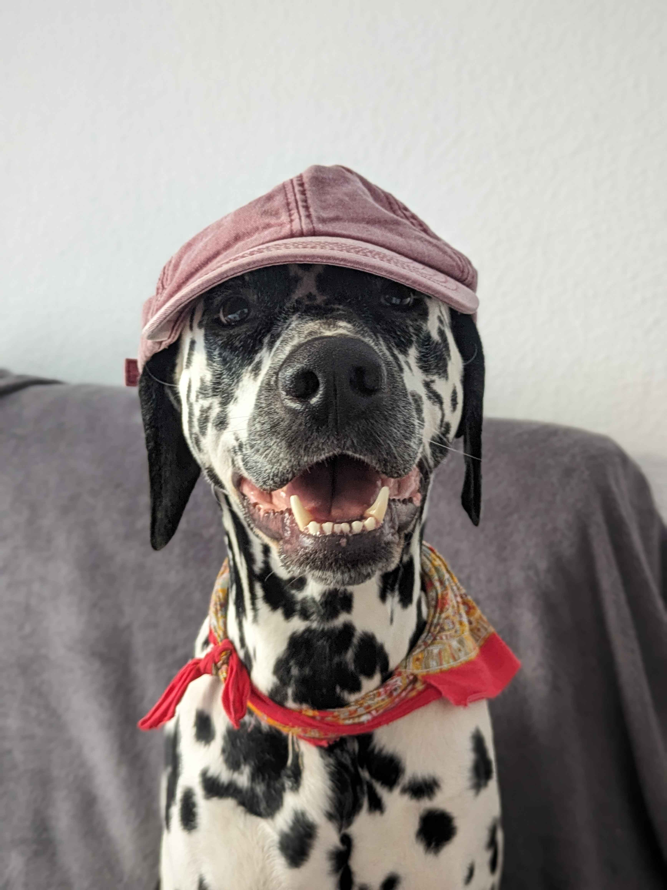
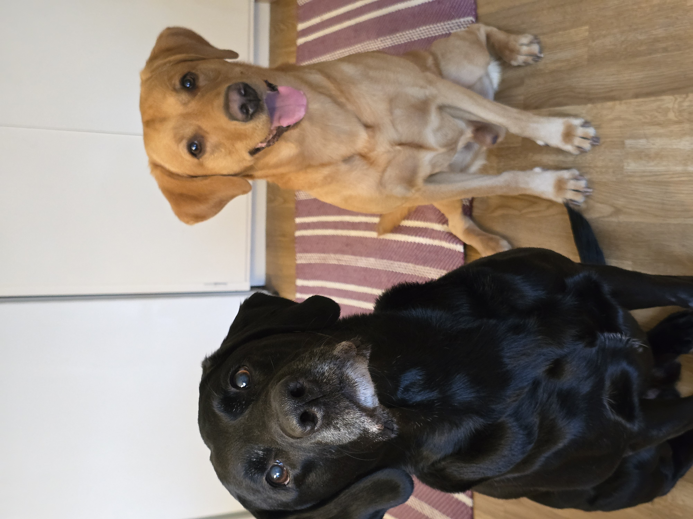
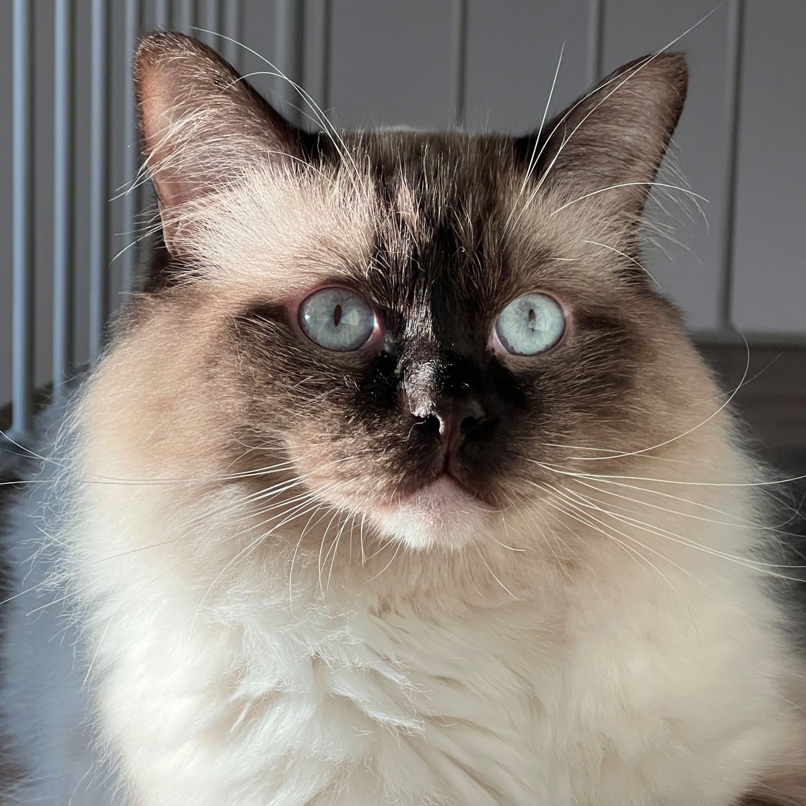

Team
Hello! We are group 2 and we hope you have enjoyed reading about the project so far. Although we had varying degrees of programming experience coming into this project we all had limited experience working with python and dataframes. Because of this we wanted to have a very inclusive development process and spent the majority of the time developing the algorithm and doing the data conversion in live discord calls screensharing. One person was writing and pushing the code but was getting live input from all participants. We also used Trello to assign tasks and divide the work further. In addition, we worked extensively with Git and developed a git-checklist to ensure everyone could contribute. Below is a short description of everyone's background with one major contribution they did to the project.
You will also find a shoutout to our precious support animals!
Amanda Lanetoft
Bachelor's in Information Architecture, specialization Frontend Web Development
Amanda has during the last year worked as a freelancer, helping new companies build their visual identities, as well as designing and developing websites using the CMS Squarespace.
She mainly worked with HTML, CSS, and JavaScript and was responsible for creating the base structure of this website.
Erik Lundahl
Bachelor's in Design of Information Systems
Erik has experience as an IT consultant for Netcompany A/S and have previously coded primarily in C#, SQL & React.
He has previous professional experience working with Git so he set up the repository, created the README, created the git-checklist and helped solve merge conflicts.
Sachini Nissanka
Bachelor's in Computer Science
Sachini has worked as a Business Analyst and freelance developer. She is familiar with algorithms, python and front-end development.
She programmed the algorithm in python during the live coding sessions and walked us through the syntax so the whole group could follow along.

Tove Lindgren
Bachelor's in Digital design and innovation
Tove has (compared to the rest of the group) a more theoretical experience with programming, but has during this project gained valuable practical experience.
Tove has focused on project structure and organisation on trello. She also contributed with the data serialization (CSV - JSON).
Support Animals
  